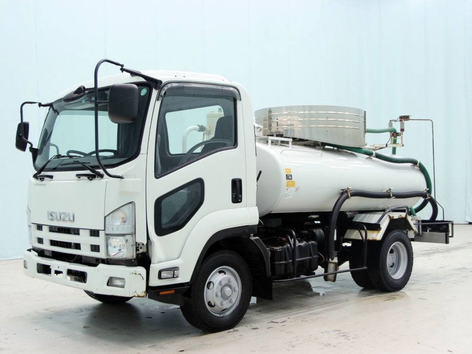
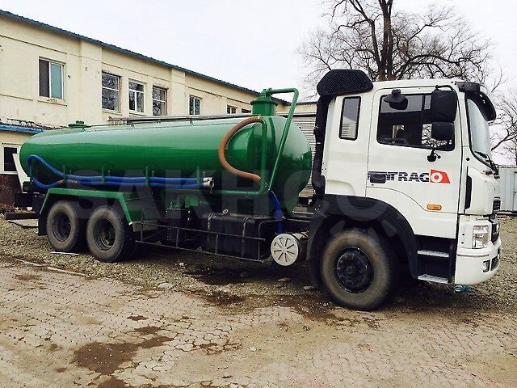
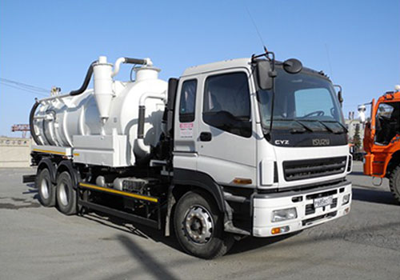
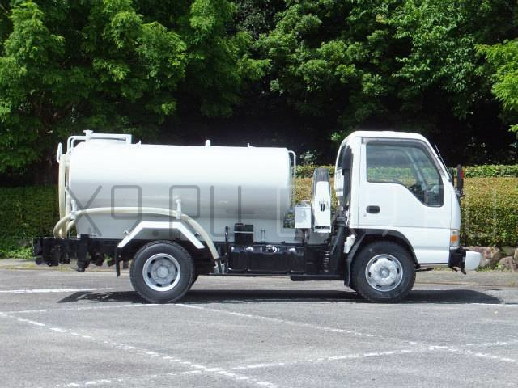

Ассенизатор(японец)
- тип цистерны: вакуумная
- обЪём цистерны: 5,5 кубов
- цена: от 1000р.
- контакты: 293-12-77

Ассенизатор(японец)
- тип цистерны: вакуумная
- обЪём цистерны: 12 кубов
- цена: от 2000р.
- контакты: 293-12-77

Илосос(японец)
- тип цистерны: вакуумная
- обЪём цистерны: 6 кубов
- цена: от 7000р.
- контакты: 288-08-07

Водовозка(японец)
- тип цистерны: вакуумная
- обЪём цистерны: 4 / 6 кубов
- цена: от 2000р.
- контакты: 288-08-07, 286-69-00
перечень услуг по обслуживанию инженерных систем
|
№ п.п |
наименование вида технического обслуживания инжинерных систем |
|---|---|
| 1 | Очистка наружного канализационного трубопровода диаметром от 100 до 300 мм |
| 2 | Очистка наружного канализационного трубопровода диаметром от 300 до 400 мм |
| 3 | Очистка наружного канализационного трубопровода диаметром от 400 до 500 мм |
| 4 | Очистка наружного канализационного трубопровода диаметром от 500 до 1500 мм |
| 5 | Разморозка трубопровода |
| 6 | Теледиагностика канализационной сети |
| 7 | Очистка колодцев |
| 8 | Очистка жироуловителей |
| 9 | Очистка грязевых отстойников |
| 10 | Чистка КНС |
| 11 | Очистка скважины |
| 12 | Доставка воды |
| 13 | Откачка септиков |
| 14 | Услуги каналопромывочной машины |
| 15 | Услуги илососа |
| 16 | Вывоз жировых и грязевых отходов, образованных в процессе очистки |
| 17 | Откачка выгребных ям |
| 18 | Откачка колодцев |
| 19 | Откачка КНС |
| 20 | Откачка уличных туалетов |
| 21 | Откачка биотуалетов |